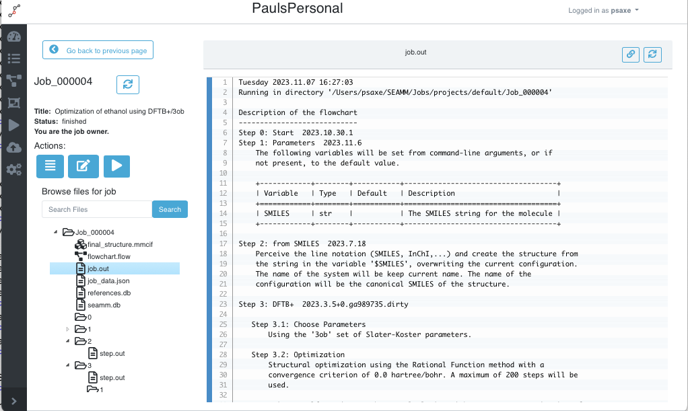
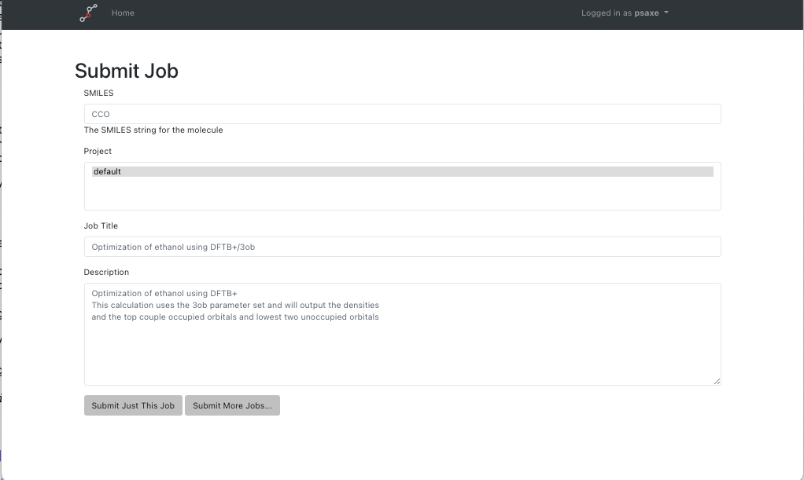
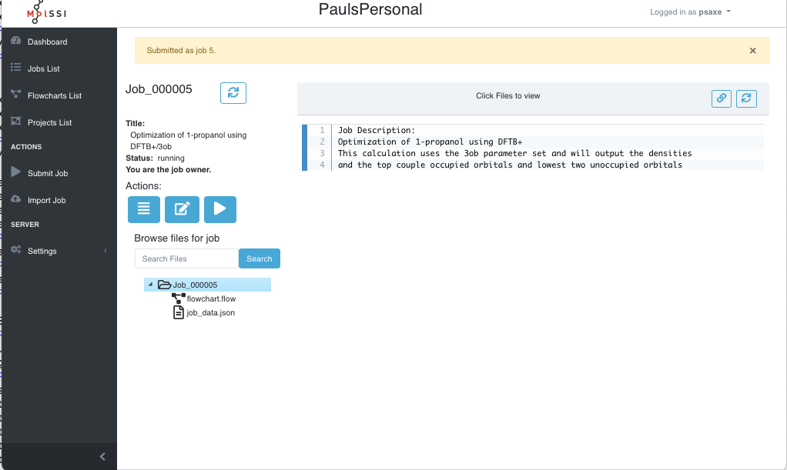
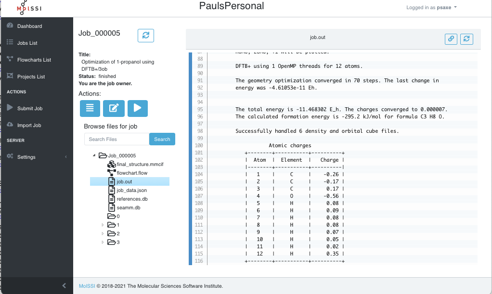

4: Resubmitting a Job#
Introduction#
So far you have learned how to create a flowchart in SEAMM, submit jobs, look at the
results, and use variables and the Parameters step to set them as you submit a
job. It is pretty easy to run lots of similar molecules this way, but let’s make it even
easier. In this tutorial you will learn how to resubmit a job from the Dashboard,
changing the parameters as you do so. In the next tutorial you’ll learn how to loop over
a number of structures and capture key results in a spreadsheet. Both make it easier to
run multiple structures, and of course you can combine both techniques. SEAMM is all
about make life easier and getting results with less effort, i.e. productivity.
Resubmitting a Job#
You need to go to the Dashboard in your browser (http://localhost:55055, will open in a new tab) and open the job that you ran in the last tutorial, 4: Resubmitting a Job. The web page should look like this:

Job Page in the Dashboard#
In the left panel of the job, between the title and the files for the job, are the Actions:. If you hover the mouse over them, a short description pops up. The right one, the arrow, is described as Submit This Job with New Parameters. Click on it and the page will change to this:

Resubmit Page in the Dashboard#
The SMILES, title, and description are exactly how you submitted the job. You probably only have one Project, default, which is selected. If you had other projects, you would choose the one for the new job here. Running the same molecule is not very interesting, so let’s change the molecule to 1-propanol – CCCO is the SMILES – and adjust the title and description:
Edited Resubmit Page in the Dashboard#
There are two buttons at the bottom of the page to submit the job. The only difference is what page you end up on after submitting the job. Submit Just This Job submits the job and takes you to its page. Submit More Jobs… also submits the job, but returns you to this page, ready to edit and submit another job. Let’s just run one job, so click on the first button, Submit Just This Job:

Job Page for the Submitted Job#
Your job number maybe different than in the example, but the title and description should be what you just typed in. The job is still running, because the job page was updated immediately after starting the job. Click on the refresh button just to the right of the job number to update the page. Because of the way the Dashboard works, refreshing the entire page in the Web browser usually doesn’t do what you want, so get used to the refresh button! In just a couple seconds the job will be finished and you can look at the results:

Job Page When Finished#
That’s it! You can submit another job by clicking on the run button of any of these jobs. The definition of the calculation will be identical except for any parameters that you choose to change. In this example, we can only change the molecule, but we could add parameters to control the parameters set used to make a more general flowchart.
Topics Covered#
Using the run button to resubmit a job.
Changing the control parameters.
Refreshing a job page while the job is running.
The next tutorial, 5: Looping Over Structures, will take a different approach to running multiple structures.